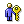
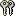
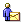

Contents:
|
Administration |
Administration
This application allows you to manage members in your organization. If you have the proper permissions, navigation items should be visible on the Organization tab of the navigation bar. This will allow you to access the various management screens. If you do not have the proper permissions, navigation items will not be visible, and you will only be able to edit your own account information and view the organization details. This application provides access to the tools that allow you to maintain member profile information as well as manage the access rights that members have to other applications within the system.
How do I view/edit my organization information?
On the navigation bar, click on the tab that says 'Organization'.
This will show your organization details screen. If you have permissions, the edit screen
can be accessed by clicking the edit icon .
How do I enable/disable applications to my organization?
Click on the 'Organization' tab and then click 'Applications'.
This will show a page with the organization's applications for which you may set
permissions. If an application is enabled for the organization, each member can access
that application based on his/her permissions. If an application is disabled for the
organization, none of the members can access that application.
What is a member?
A member is someone who is part of your organization. Members are
visible from the 'Organization' tab by clicking on 'Members'. If you have administrative
permissions, you will be able to view and edit the details of members of your organization
by clicking on view icon . You can
set a members permissions by clicking on memer permissions icon

. This will bring up a screen from which you may enable/disable applications for a member, as well as set individual permissions using the permissions icon
.How do I add members to my organization?
First click on the 'Organization' tab then click 'Add Member'. This
will bring up a dialog for entering the new member's e-mail address (this will be their
login name), first name and last name. Upon clicking Add, the applications available to
this new member will be listed. You can enable and disable this member's access to
applications from this screen. You can also change specific permissions for an application
by clicking on the permissions icon .
This will bring up a screen from which you can grant or revoke individual permissions for
the member. After enabling/disabling applications for the new member, click the [Finish
button]. An e-mail message will be sent to the the new member. When the member logs in for
the first time, they will be given a series of setup screens from which their detailed
information (phone numbers, addresses, etc.) can be entered.
How do I invite members to my organization? 
To invite members to your organization click on the invite
icon
How do I enable/disable members in my organization?
Click on the 'Organization' tab and then click 'Members'. Select
the member and click on [Enable Selected] to enable a member or click on [Disable
Selected] to disable a member. If a member is disabled, the member cannot login into your
organization. You can re-enable a member at any time.
How do I reinvite a member?
Click on the 'Organization' tab and then click 'Members'. Select
the member and click on [Re-invite selected] to re-invite the member. An e-mail is sent to
the member with his/her login and password information.
How do I delete a member from my organization?
You cannot delete a member from your organization. To
prevent the member from using your organization, disable that member by clicking on
[Disable Selected] for that member. You can prevent the display of disabled members on the
Members page by changing your Preferences.
How do I enable/disable
Applications and features for a member ?
Click on the 'Organization' tab and then click 'Members'. By selecting a member, and then
clicking on the member permissions icon
next to the member, you can enable and disable applications for that particular member.
When an application is enabled for the member a permission icon is visible. This will allow you to set
specific permissions for the given member. Clicking [Apply] or [Finish] will commit the
changes for that member.
What are permissions?
A permission represents access to a particular feature of an
application. If the permission is granted(i.e. the grant column for the permission has
been selected) then the member has access to that feature. If the permission is revoked,
the member cannot access that feature.
How do I change my password or personal information?
Your password can be changed when you edit your personal information.
This page can be reached by clicking on the edit profile icon on the top right corner of the page.
This will bring you to the form where your password can be changed. After changing the
password field, make sure to click the [Save] button.
This application allows you to bookmark your frequently visited web sites for easy access later. There are two types of bookmarks, 'Organization' and 'Personal'. Bookmarks added to the organization are accessible to all the members within your organization. A member can add/view/delete bookmarks from the organization if they have the proper permissions. Bookmarks added to the personal bookmarks are the member's own bookmarks and will only be visible to the member. The members always have full access to their personal bookmarks.
How do I add a bookmark?
To create a bookmark click on the [Add Bookmark] link. Enter the
bookmark information, selecting the type of bookmark, and entering the URL address (E.g..
www.notwired.com)and the display name for the bookmark. You may also enter an optional
comment field. Click on [Add Another] to add the bookmark, and return to the add screen.
This allows you to quickly add multiple bookmarks. By default bookmarks are added to the
category you are currently viewing. You can also add bookmarks to any category by using
the Category selector on the add page.
What are categories?
Categories consist of a collection of related bookmarks and/or
sub-categories. These define a logical group of bookmarks. For example, you can create a
category called 'Finance' which contains bookmarks related to various financial sites.
Categories are shown as a folder icon .
How do I create a category?
To create a category click on the [Add Category] link. Enter the new
category information. This new category will be located in the category you were viewing
when it was added. You can also create the category as a sub-category by using the
Category selector on the add page. You can create as many categories and sub-categories as
needed.
How do I change the information in a bookmark or category?
To change information for the bookmark or category click on the edit
icon to the right of the bookmark or
category. This will display the edit screen.
How do I remove a bookmark/category?
To remove a bookmark or category, select the checkbox located to the
left of the bookmark or category, and then click on [Delete Selected]. Note that if you
delete a category, all categories and bookmarks located in that category will also be
removed.
How do I move a bookmark/category?
To move bookmarks and categories, select the bookmarks/categories you want to move and
click on [Move Selected]. Then select the category into which the
selected bookmarks with be moved.
How do I e-mail bookmarks?
You can e-mail bookmarks you want to send by selecting the bookmarks and clicking [E-mail
Bookmarks]. If you select a category, all the bookmarks under the category will be sent.
Then select the member you want to e-mail the bookmarks to. When the member receives the
e-mail, the member has an option to add the bookmarks he received to their Personal
Bookmarks on NotWired. An attachment is also sent with the e-mail containing the bookmarks
sent. Other tools, for example, Netscape Communicator or Internet Explorer, can use this
attachment to import the bookmarks.
How do I import/export bookmarks?
To import/export bookmarks click on the [Import/Export Bookmarks] link. Based on your
browser follow the corresponding instructions. On import the bookmarks from your browser
are copied to NotWired and on export the bookmarks from NotWired are copied to your
browser.
Calendar
The calendar can be used to keep track of your events. It has three types of views, Monthly, Weekly, and Daily. You can also view your task list ("to-do's") that have been assigned to you, or which you have assigned to others via a task request. In addition, the calendaring system of NotWired supports shared group calendars. Events placed on your personal calendar can be copied to the organization calendar and shared.
What kind of events can I create?
You have the ability to create the following events:
Anniversary
Appointment
Bill Payment
Call
Car Rental
Conference
Conference Call
Entertainment
Event
Flight
Hotel
I Interview
Meeting
Party
Travel
Vacation
You can also create the following things:
Task Request - request someone in you organization to perform a task.
Task - assign yourself something to do.
How do I create events?
Click on the 'My Desk'' tab, and then on 'Calendar' this will show your default calendar
view which can be set in preferences. Locate the menu item
that says "Add Event: ". From this menu, select the type of event you would like
to create. This will bring up a form for adding event information.
When all the required information for the event has been added, use the [Schedule] button
to add the event to your calendar. You can also use [Schedule Another] button to add the
event and schedule another event of the same type.
For convenience, you can create some events from the 'Create' short cut menu at the very
top of the screen.
What is a 'repeating' event and how do I create one?
A repeating event is an event which occurs at specific intervals for
a period of time. Most events can be made to repeat. The repeat interval can be set when
creating or editing an event. By default, events do not repeat. You can set the repeat
interval by using the radio buttons and selection boxes in the 'Repeat:' section of an
event creation/edit form. If you select the 'Until:' checkbox then the event will repeat
until the date specified. If the checkbox is not selected then the event will repeat
indefinitely. You can change the repeat interval by viewing an existing event, changing
the repeat interval, and clicking the [Update] button.
How do I get notified of events?
Every event creation/edit form has a notify subsection. It is used
for setting up notifications for the event you are creating or editing. The Notify
subsection is pre-filled by your preferences for the
notification of events. This allows you to specify the notification times before the
actual event time. You also have the ability to change the mode of notification to e-mail
or wireless SMS messages. See Also: preferences
How do I accept/decline meetings/events?
When an meeting event is created, all the invitees of the event get
an invitation to the event. This notification may be an e-mail message, or a wireless
(SMS) message depending on their individual preference settings. The event will also
appear in their 'Inbox' from which they can accept, accept tentatively, or decline. When a
member receives an invitation via e-mail, there is a link embedded in the e-mail message
that will allow the member to link into the system and view detailed event information,
and accept or decline the event.
How do I view 'To-dos' and Task Requests?
In the calendar view, there is menu labeled 'View:' from which to
select the day, month, week or 'task' views. When the 'task' view is selected you will see
a list of tasks assigned to you. The menus Priority, Status, Due Date are used to filter
the display of the todo's. There is also a menu for selecting the sort order of items in
the list. The menu selection 'assigned to me',
if selected, will show all the tasks that are assigned to you. If 'assigned by me' is selected, then all tasks that you have
assigned to others are shown. Tasks that are not complete and past due are shown
with a late notice icon .
How do I import/export calendar events?
To import/export calendar events click on the [Import] or [Export] link. Then follow
the corresponding instructions. On import the events from your PIM (Personal
Information Managing) program are copied to NotWired and on export the eventss
from NotWired are copied to your PIM. NotWired uses standard naming for the
field matching during the Calendar Import.
What Outlook fields are mapped
to NotWired?
The following Field Names you can include in the import file:
Subject, Start Date, Start Time, End Date, End Time, All Day Event,
Reminder On/Off, Reminder Date, Reminder Time, Categories, Description,
Location, Private and Show time as.
The fields sequence is not important, but the field Names should have correct
spelling.
How to improve field mapping?
You can select fields to be imported at the Field Mapping page. If the Field Name
spelling was not correct or you are importing from the custom *.CSV file you can
choose any column available in drop-down menu.
What is Org. Association?
You can associate a meeting, interview or conference call
event to an organization. By associating the event to an organization, only
active members who are invited to the event can view information about the meeting
event (like minutes, notifications etc.). Therefore, disabled members of an
organization will not be able to view crucial information about the event even
if they are still using NotWired.
Contacts
The Contacts application lists the contact information of all the members in your organization, shared contacts in your organization or personal contacts. Any member that has been added to the organization must log in at least once, in order to show up in the contact listings. The contact application also has last name search and advanced searching capabilities. All members and shared contacts in the organization are viewable by all members of your organization. Personal contacts are NOT visible to others in your organization.
What are groups?
Groups are logical groupings of members or contacts.
By default all the membersbelong to the 'Members' group of your organization.
You can create your own groups and add members or contacts to these groups as
you see fit. Groups can be shared or personal. Shared groups are visible to
all members in your organization. Personal groups are only visible to you.
How do I manage groups?
You can create a new group by clicking on [New Group] link. Here you can enter the group
name and add members to this group. If the name of your group is the same as any group
that you deleted previously, you can restore that group information back by clicking on
'Restore Group' button. You can see all the groups that are visible to you by clicking on
[View All Groups] link. You can delete a group by selecting the group you want to delete
and clicking on [Remove Selected] link..
How do I view a group of contacts?
Choose a group in the Group combo box in the upper left hand corner below
the navigation bar in the Contacts application. Once this selection is changed,
NotWired will display the contacts for that group.
How do I search for contacts and members?
You can quickly search for a member using their last name
or you can go to the [Advanced Search] link option and search on any combination
of First Name, Last Name, Department, State and Reports To.
What are contact types?
Contact types are a classification of contacts. For example, vendors, supplier
or customer. Contact types is another form of classification like groups.
How do I create a contact type?
Click on the [ New Contact Type] link within the contacts application.
How do I add a member to the database?
You can add a person to your membership by inviting them
join to your organization. There is an invite shortcut available for inviting members if
your administrator gave you the right to invite new members. Members may also
be added using the Administration module.
How do I add a contact to the database?
You can add a contact by using the drop down 'Create Contact'
on the navigation bar. You can also click on the add contact icon .
Additionally, you can click on the 'New Contact' link while in the Contacts
application. Fill in the information and click on the SAVE button.
How do I import/export contacts?
To import/export contacts click on the [Import] or [Export] link. Then follow
the corresponding instructions. On import the contacts from your PIM (Personal
Information Managing) program are copied to NotWired and on export the contacts
from NotWired are copied to your PIM. NotWired uses standard naming for the
field matching during the Import Contacts.
What ACT! fields are mapped to NotWired?
The following Field Names you can include in the import file:
First Name, Last Name, Phone Ext., Phone, Fax Ext., Fax, Home Phone, MobilePhone,
Alt. Phone Ext., Alt Phone, Pager, City, Country, State, Address1, Address2,
Address3, Zip, Home City, Home Country, Home State, Home Address 1, Home Address
2, Home Zip, E-mail Login, E-mail System, Web Site, Department, Title, Assistant,
Asst. Phone Ext., Asst. Phone, Asst. Title, Company, Referred By, Spouse and
User 1 through 15.
The fields sequence is not important, but the field Names should have correct
spelling.
What GoldMine fields are mapped to NotWired?
The following Field Names you can include in the import file:
CONTACT, LASTNAME, DEAR, PHONE1, EXT1, PHONE2, EXT2, PHONE3, EXT3, FAX, EXT4,
ADDRESS1, ADDRESS2, ADDRESS3, CITY, STATE, ZIP, COUNTRY, E-Mail Address, Web
Site, DEPARTMENT, TITLE, SECR, COMPANY, SOURCE, USERDEF01 through USERDEF16.
Please note that CONTACT field is separated into first name, middle name, and
last name during import whenever possible.
The fields sequence is not important, but the field Names should have correct
spelling.
What Outlook 98 / 2000 fields are mapped to NotWired?
The following Field Names you can include in the import file:
First Name, Middle Name, Last Name, Suffix, Title, Birthday, Gender, Primary
Phone, Business Fax, Home Phone, Mobile Phone, Pager, Company Mane Phone, Home
City, Home Country, Home State, Home Street, Home Street 2, Home Street 3, Home
Postal Code, Business City, Business Country, PO Box, Business State, Business
Street, Business Street2, Business Street3, Business Postal Code, Other City,
Other Country, Other State, Other Street, Other Street 2, Other Street 3, Other
Postal Code, E-mail Address, E-mail Display Name, E-mail 2 Address, E-mail 2
Display Name, Web Page, Department, Job Title, Assistant's Name, Assistant's
Phone, Company, Referred By, Spouse and User 1 through 4.
The fields sequence is not important, but the field Names should have correct
spelling.
What Palm fields are mapped to NotWired?
The following Field Names you can include in the import file:
Last Name, First Name, Title, Company, Work, Home, Fax, Other, E-mail, Address,
City, State, Zip, Country and Custom 1 through 4.
The fields sequence is important, and the field Names should have correct spelling.
How can I improve field mapping?
NotWired makes mapping fields easy. You will be directed to the mapping screen by
NotWired when the application detects any unmatched fields. Alternatively, you can
manually select "Field Mapping" option. Three subsequent screens will be displayed
presenting you with all information regarding successfully matched fields and giving
you an option to improve the automatic selection.
Entries from the imported file will be also available for all unmatched fields. After
reviewing the contact 'Basic'/'Extended' information you will be directed to the
'Extra' information page. There you will be given an option to include unmatched fields
in the 'Notes', associated with the contact. You can select all fields on this page or
make any combination of single selections.
You can navigate through all Mapping pages and make any changes to your satisfaction.
Then click 'Import' on the 'Extra' information page to proceed with the Contacts Import.
This application allows you to send and receive email.
How do I fetch mail from my POP3 account?
There are two ways:
I've entered my POP3 account via the Accounts view, but when I click on the Fetch New Mail link, none of my mail gets popped from my POP3 account. Why?
This is because the POP3 account does not have its Include when fetching mail property checked. To change this, select Accounts from the view dropdown menu. Click on the edit icon for the account you are trying to pop mail from. Check the checkbox that says Include when fetching mail. Click the Done button. This account will now have mail popped whenever you click the Fetch New Mail link from the Folders view.
How to download ical?
ICal is a standard data representation for calendars.
All NotWired events come with iCal attachments. You can download the attachment
and open it. As a Windows user this will most likely open Outlook and place
the event in your Outlook calendar or task list. To download, click on the "download"
link below the attachment.
How to download vcards?
A vCard is a "virtual card." It contains the
information about the person that sent you an email. NotWired puts a "Download
Contact Information" link next to the attachment. Click on this link and
open it. As a Windows user this will most likely open Outlook and place the
event in your Outlook contact list.
Summary
This application is used to show events you have been invited to, and Task Requests that has been assigned to you and are waiting for your acceptance. You can click on the title of the item to view the details of the item or change notification details.
How does it work?
When a member invites you to a event or assigns you a Task
it shows up in your Inbox. You can accept, accept tentatively, decline, or delete
meetings by selecting the item (via the checkbox on the left) and the clicking
on the appropriate action. For task requests, you can accept, decline, delete,
mark complete, or reassign the task to someone else.
This application allows you to set preferences used within other applications.
The 'Global' preferences category allows you to select your default
timezone. All the events you create will use this timezone as the default timezone. You
can also set the way you want phone numbers and dates to be formatted within the system.
The 'Administration' preferences include the total number of rows in table to display per
page and a choice to display the disabled members on the table.
The 'Calendar' preferences include definitions of what range of hours are considered work
hours when displayed on your calendar, settings for notifications and the default calendar
view( Month, Day or Week). You can also set your preferred method of receiving
notifications (none, email, mobile) and the default pre-notification time and destination
for events.
This application allows you to send status reports to your supervisor. If you have your 'Reports to:' field set in your profile information it will appear in the 'Manager' field. You can also send the status report to another person by specifying their e-mail address in the field marked 'E-mail other:'
On the top pane of NotWired you can search for a text match in data within the calendar, tasks, bookmarks and phonebook databases. Matches to the search are presented in a summarized format so you can instantly link to information.
On the top pane of NotWired the 'Create...' menu item allows you to rapidly create an event, task or status report. This shortcut option will jump immediately to the data entry form of your choice.
Additionally, there are shortcut icons along the top of the navigation bar to the upper right of the browser window.
NotWired supports wireless access so that you can access your Inbox, Task List, Contacts, and Calendar while you are away from your desktop browser. NotWired currently provides a WML and a PQA interface.
How do I access NotWired from a wireless WAP-enabled device?
You can enter the url http://www.notwired.com into your
device's WAP browser. If you are using a wireless phone, and do not know how to enter a
url into the browser, please contact your carrier for more information. If you prefer to
access NotWired securely, you can direct your browser to https://www.notwired.com.
How do I access NotWired from my PalmOS device?
Instructions for downloading and installing the NotWired pqa file can
be found here.
What NotWired features do I have on my wireless device? Summary
Task List
Contacts
Calendar
Preferences